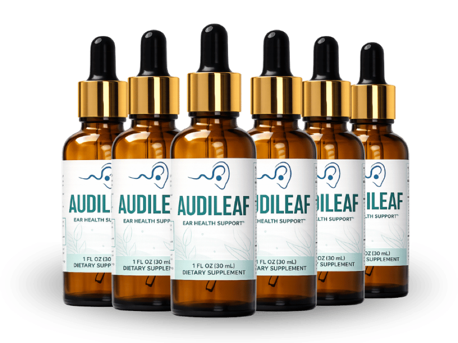

What Is AudiLeaf And How Does It Work?
By eight o'clock at a family dinner, you are not struggling to hear. You are exhausted.
That exhaustion has a name, and it is the part almost nobody explains. When the signal arriving from your ears is incomplete, your brain does not simply hear less — it starts doing reconstruction work. It fills gaps, guesses at word endings, cross-checks lip movement against context. That is real cognitive labor, running continuously, and it is why a two-hour conversation in a noisy restaurant leaves you wrung out in a way that a quiet evening never does.
Call it listening fatigue. It is the reason people withdraw from group settings long before they ever describe themselves as having trouble hearing.
The inner ear runs on the smallest blood vessels in the body. The delicate structures inside it are metabolically demanding and unforgiving about supply — when circulation there thins out, the signal leaving for the brain gets noisier, and the reconstruction work goes up.
AudiLeaf works on that supply side. It is a once-daily liquid taken by dropper, built around a 200mg proprietary herbal blend plus chromium picolinate and two calming amino acids, formulated to support healthy inner-ear circulation, balanced auditory nerve function, and the body's own resilience to the daily strain of straining.
The timeline is honest about itself. Users report noticeable change somewhere between weeks three and eight, with the manufacturer recommending 90 to 180 days for the fuller picture. That is slower than anyone would like, and it is what working on circulation rather than amplification actually looks like.
This is not a hearing aid and it does not pretend to be one. It works underneath the problem rather than turning up the volume on top of it.
AudiLeaf Ingredients
Eight ingredients, and they split cleanly into two jobs: keep the blood moving, and keep the nervous system calm.
On circulation and cellular protection:
- Grape Seed Extract: The centerpiece. Rich in proanthocyanidins, among the most studied antioxidant compounds for healthy circulation and cellular protection — including the cells of the inner ear specifically. This is the ingredient aimed directly at the supply line.
- Green Tea Leaf Extract: Catechins supporting healthy blood flow and defending against oxidative stress, the slow background damage that accumulates in delicate tissue over decades.
On stamina and the body's stress response:
- Maca Root Extract: A traditional adaptogen for vitality, stamina, and a healthy response to daily stress. Relevant here because listening fatigue *is* a stress load, applied for hours at a time.
- Ginseng Root Extract: Long used to support energy and the body's response to physical and mental demand.
- Eleutherococcus Senticosus (Siberian Ginseng): Studied for stamina, focus, and a normal stress response — the endurance side of holding attention through a difficult conversation.
On calming the signal:
- GABA (Gamma Aminobutyric Acid): A calming amino acid supporting a relaxed nervous system and a balanced response to background noise. This addresses the specific misery of a crowded room, where the problem is less volume than the inability to push the background down.
- L-Tryptophan: A second calming amino acid in the proprietary blend, working alongside GABA.
- Chromium Picolinate: Included in the blend for metabolic support.
Taken together the logic holds up: two ingredients feeding the ear, three supporting the endurance to keep listening, two quieting the noise floor. It is 100% natural with no harsh stimulants — which matters for a formula meant to calm rather than key you up.
AudiLeaf Side Effects
There is nothing in this bottle that is new to your body.
Look at what is actually on the label — a root used as food in the Andes, grape seed, green tea, ginseng, and two amino acids your body already manufactures. These are naturally occurring compounds supplied at supportive amounts, not pharmaceutical agents forcing a system to behave differently. The formula is 100% natural and contains no harsh stimulants, which is where tolerance problems usually originate.
That is borne out in practice. Across users taking AudiLeaf as directed, there is no widespread pattern of adverse reports.
Manufacturing backs it up. AudiLeaf is produced in the USA in a GMP-certified facility, under documented quality control. With a liquid formula, knowing that each dropper delivers what the label says is its own kind of safety.
As with any dietary supplement, if you have an existing medical condition or take prescription medication, check with your healthcare professional before starting.
AudiLeaf Dosage
One dropper, once a day. That is the whole routine.
The measure is 1 mL — roughly two full droppers — taken once daily. Each bottle holds 30 mL, a clean 30-day supply, so a glance at the level tells you whether you have actually been consistent or have been missing days without registering it.
Because it is a liquid, most people find it easier to stick with than a capsule. Take it at the same point each day — most attach it to morning coffee, which anchors it to something already automatic.
Consistency is what this rewards, more than dose size. Circulation improves gradually and holds only under steady conditions. Skipping days does not slow the result proportionally; it mostly prevents it from arriving at all.
That is why the manufacturer frames the real protocol as 90 to 180 days rather than 30. The multi-bottle options on the official site exist for that reason — they cover a full protocol without a monthly reorder and work out cheaper per bottle. Everything is a one-time purchase, with no subscription and no automatic recharge.
Do not exceed the recommended amount. A larger dose does not accelerate circulation.
AudiLeaf – Refund Policy
A 60-day money-back guarantee covers every order.
Set that against the timeline and the structure becomes clear. AudiLeaf says change shows up between weeks three and eight. The guarantee runs sixty days — deliberately longer than the window in which you would find out. You get the whole answer before the door closes, which is the opposite of how a company behaves when it is counting on the deadline passing first.
Full terms and the current guarantee conditions are listed on the official website.
AudiLeaf Customer Reviews
 Robert Harmon
Phoenix, AZ
Verified Purchase – 6 Bottles
Robert Harmon
Phoenix, AZ
Verified Purchase – 6 Bottles
"I'm 64 and I'd become the guy who nods. Somebody would say something across the table at a restaurant and I'd just nod and smile, because asking a third time felt worse than missing it. My wife started ordering for me. What I noticed first with AudiLeaf wasn't hearing better exactly — it was not being wiped out by nine o'clock. That came around week four. The rest followed."
 Walter Briggs
Atlanta, GA
Verified Purchase – 3 Bottles
Walter Briggs
Atlanta, GA
Verified Purchase – 3 Bottles
"The TV volume was the running joke in my house until it wasn't funny anymore. My daughter would walk in and turn it down and I'd feel about ninety years old. I'd been putting off getting tested for two years out of pure stubbornness. Six weeks on the drops and my wife asked when I'd turned the TV down. I hadn't. It was just already where she liked it."
 Linda Ramirez
Seattle, WA
Verified Purchase – 6 Bottles
Linda Ramirez
Seattle, WA
Verified Purchase – 6 Bottles
"My problem was never quiet rooms. It was my book club — eight women in a living room, everyone talking, and I'd catch maybe half. I stopped going for almost a year and told them my schedule got busy. I'm back now. I still lose a word here and there. But I can follow the thread of a conversation across a noisy room again, and I didn't think that was coming back."
AudiLeaf – Where To Buy
One thing worth knowing before you order, because it catches people out.
AudiLeaf is not sold through Amazon, eBay, or Walmart. Similar-looking bottles do turn up on those platforms. With a liquid botanical formula, what you cannot verify from a marketplace listing is how it was stored or how long it sat somewhere warm before shipping — and heat degrades botanical extracts in ways that are invisible in the bottle.
That guarantee lives on the official site and nowhere else. So does customer support. Buy from a reseller and your order simply is not in the manufacturer's records — no purchase to look up, no refund to issue. The discount cost you the only protection you had.
Buying from the source is what preserves all of it — the real formula, made to the standards described, with support and refund rights attached to your name.
Before completing a purchase, confirm you are on the official AudiLeaf website.
To ensure you're getting the authentic product, most users choose to visit the official website directly.
Is AudiLeaf A Scam?
No — and the strongest evidence is what the product declines to promise.
A scam in this category is easy to write. You claim to restore hearing, you promise it in days, and you keep the mechanism vague enough that nobody can hold you to it. AudiLeaf does none of that. It states plainly that it is not a treatment for hearing loss. It names a slow window — weeks three to eight, with 90 to 180 days for the full picture — which is a commercially inconvenient thing to say. And it works on listening fatigue and inner-ear circulation, a specific and checkable claim, rather than on hearing itself.
The rest lines up behind that. Eight ingredients with defined roles. Manufacturing in a GMP-certified facility in the USA. A single transparent purchase with no recurring billing. A 60-day guarantee that does not even ask for the bottles back.
Now the honest limits. This will not be the answer for every person reading it. Difficulty hearing has several possible causes — structural, nerve-related, sometimes purely mechanical — and a circulation-and-calm formula reaches some of them and not others. If you have never had a hearing test, book one. Sixty days spent getting a real answer beats sixty days of any supplement.
But if you have been quietly editing your life around it — skipping the restaurant, sitting out the group, nodding instead of asking — then the maths is not complicated. Sixty guaranteed days. If nothing shifts, you ask for the money back and the only thing it cost you was the wait.
As with any dietary supplement, check with a healthcare professional before starting if you have an existing condition or take prescription medication.
For those who want to verify product details or check current availability, the official AudiLeaf website remains the safest and most reliable option.
